1 de octubre: Día Internacional del café.
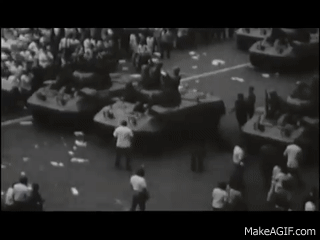
2 de octubre de 1968 – La Matanza de Tlatelolco 🕊️
Un día triste y lleno de memoria para México. Estudiantes salieron a las calles buscando justicia, libertad y democracia.
Aunque fueron silenciados, su valor sigue inspirando a las nuevas generaciones a no rendirse.
Un día triste y lleno de memoria para México. Estudiantes salieron a las calles buscando justicia, libertad y democracia.
Aunque fueron silenciados, su valor sigue inspirando a las nuevas generaciones a no rendirse.
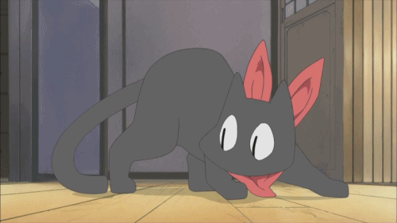
4 de octubre – Día Mundial de los Animales 🐾
Peludos, emplumados, con aletas o escamas… todos tienen su día. Este festejo busca que respetemos y cuidemos a los animales que comparten nuestro planeta. ¡Ellos también son parte de la gran familia de la Tierra!
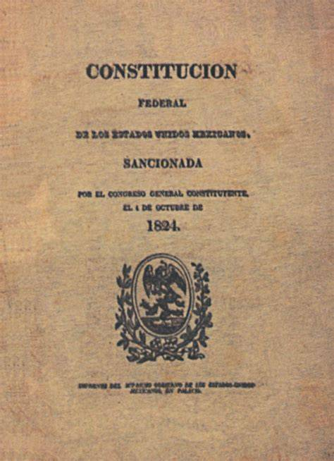
4 de octubre de 1824 – Se promulga la Primera Constitución Federal de la República 🇲🇽
México dio un paso enorme hacia su organización como nación libre. Este documento marcó el inicio de nuestras leyes y de un gobierno más justo. ¡Un hito histórico que nos recuerda el valor de la independencia y la justicia!
5 de octubre – Día Mundial de los Docentes 🍎
Hoy se honra a quienes enseñan con pasión, paciencia y creatividad. Ser maestro es sembrar conocimiento, esperanza y valores en cada estudiante. ¡Gracias por formar mentes brillantes todos los días!

5 de octubre de 1910 – Francisco I. Madero firma el Plan de San Luis 📜
Con su famosa frase “¡Sufragio efectivo, no reelección!”, Madero encendió la chispa que inició la Revolución Mexicana. Su valentía y convicción inspiraron al pueblo a luchar por libertad y democracia.
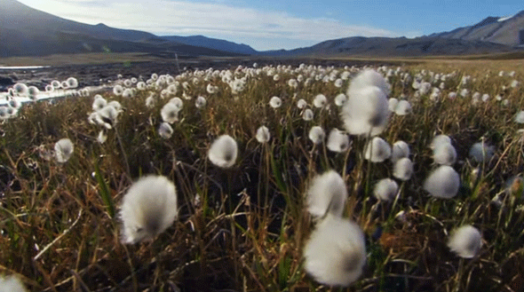
7 de octubre – Día Mundial del Algodón 👕
Ese suave y blanco tesoro natural que usamos a diario tiene su propio día. El algodón viste al mundo, impulsa la economía y representa el trabajo de muchas manos. ¡Aplaudamos a esta noble fibra que nos da comodidad!
8 de octubre – Día Mundial de las Aves Migratorias 🕊️
Miles de aves cruzan continentes para sobrevivir, guiadas solo por su instinto y las estrellas. Este día nos invita a cuidar su entorno y admirar su belleza. ¡Ellas son las viajeras más libres del planeta!

9 de octubre – Día Mundial del Correo 📬
Antes de los mensajes instantáneos existían cartas con tinta, papel y emoción. Hoy celebramos a quienes hacen posible que las palabras viajen por el mundo. ¡Un mensaje puede cambiar el día de alguien!
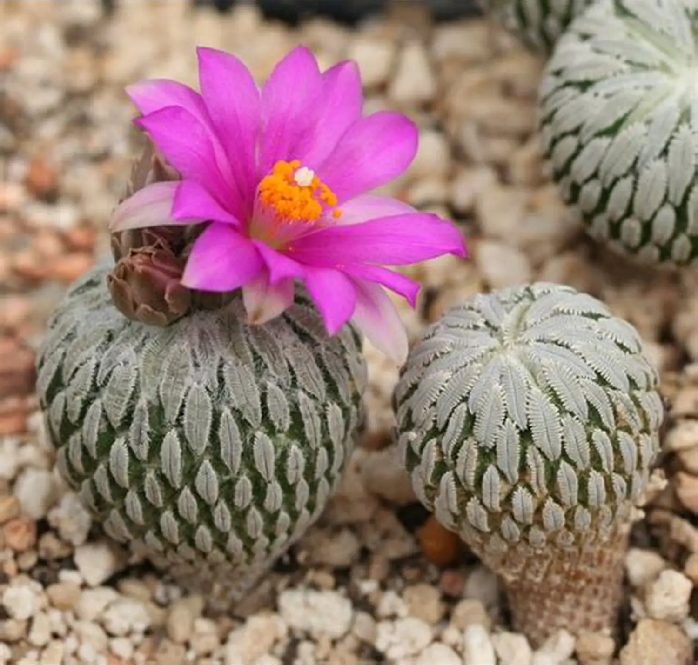
10 de octubre – Día Nacional de las Cactáceas 🌵
Sí, ¡los cactus también tienen su día! Orgullosamente mexicanos, estas plantas resistentes florecen donde otros se rinden. Nos enseñan que incluso en los lugares más duros, la vida puede ser hermosa.

12 de octubre de 1492 – Día de la Raza 🌎
Se conmemora el encuentro entre dos mundos: Europa y América. Fue el inicio de un intercambio cultural que transformó la historia. Hoy reflexionamos sobre la diversidad, el respeto y la unión de los pueblos.
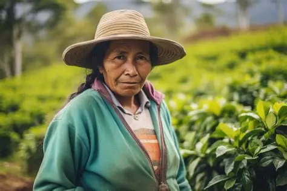
15 de octubre – Día Internacional de las Mujeres Rurales 👩🌾
Mujeres trabajadoras del campo, guardianas de la tierra y del alimento. Este día las reconoce por su esfuerzo y sabiduría ancestral. Gracias a ellas, el campo sigue vivo y fuerte.
15 de octubre – Día de las Personas con Discapacidad Visual 👁️🗨️
Un día para promover la inclusión, el respeto y la empatía. Recordemos que ver con el corazón también es una forma de percibir el mundo. ¡La verdadera visión está en la mente y en los valores!
16 de octubre – Día Mundial de la Alimentación 🍞
La comida une culturas, familias y sonrisas. Este día nos invita a valorar los alimentos y combatir el desperdicio. ¡Cada plato cuenta en la lucha contra el hambre en el mundo!
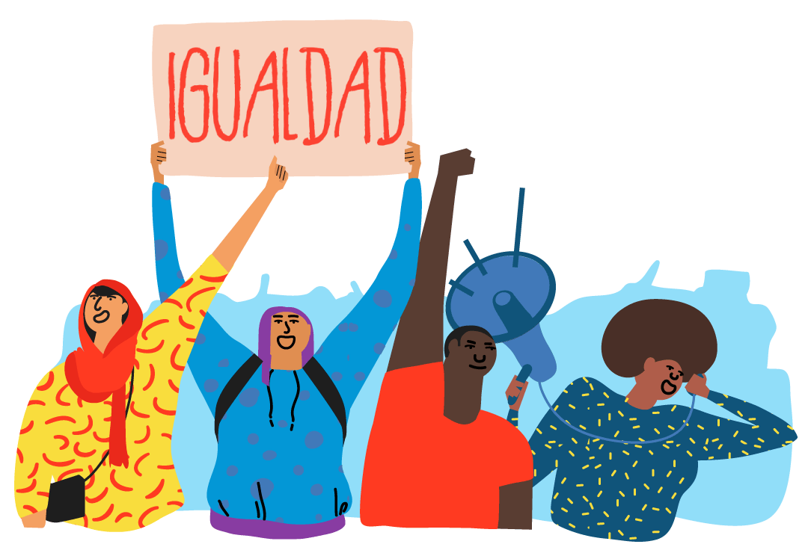
17 de octubre de 1953 – Igualdad de derechos para la mujer mexicana ⚖️
¡Un triunfo histórico! Las mujeres mexicanas obtuvieron el derecho al voto y a la participación política. Gracias a su lucha, hoy la voz femenina se escucha en todos los espacios.
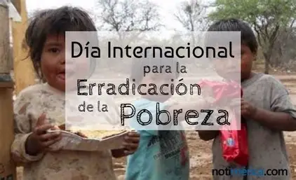
17 de octubre – Día Internacional para la Erradicación de la Pobreza 🤝
Un llamado a la solidaridad global. Nadie debería vivir sin oportunidades. Este día nos recuerda que con empatía, educación y acción podemos construir un mundo más justo.
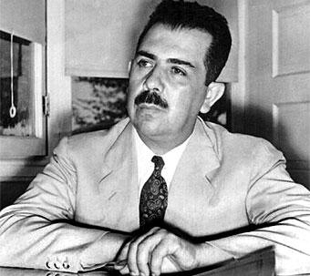
19 de octubre de 1970 – Muerte de Lázaro Cárdenas del Río 🇲🇽
Recordamos al presidente que transformó México con justicia social, educación y apoyo al pueblo. Su legado sigue vivo en la historia y en los valores nacionales.
19 de octubre – Día Internacional de Lucha contra el Cáncer de Mama 🎀
Día de fuerza, esperanza y prevención. Miles de mujeres enfrentan esta lucha con valentía. ¡Tócate para que no te toque! La detección temprana salva vidas.
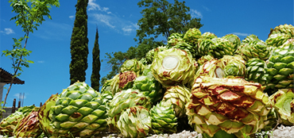
20 de octubre – Día Nacional del Mezcal 🥃
Bebida ancestral que guarda el espíritu del maguey y la tradición mexicana. ¡Salud por el mezcal, que alegra los corazones y cuenta historias de nuestras tierras!
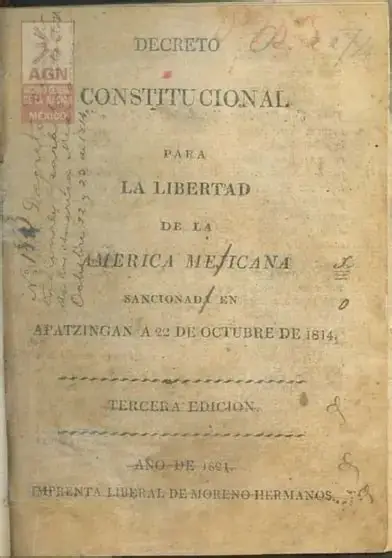
22 de octubre de 1814 – Constitución de Apatzingán 📖
Uno de los primeros documentos que dio forma a la independencia de México. Su espíritu de libertad y justicia marcó el rumbo hacia un país soberano.
22 de octubre – Día de la y el Médico 🩺
Los héroes de la salud que salvan vidas cada día. Con vocación, ciencia y corazón, los médicos cuidan de todos nosotros. ¡Gracias por su entrega y servicio!
La Persistencia de la Memoria - Salvador Dalí